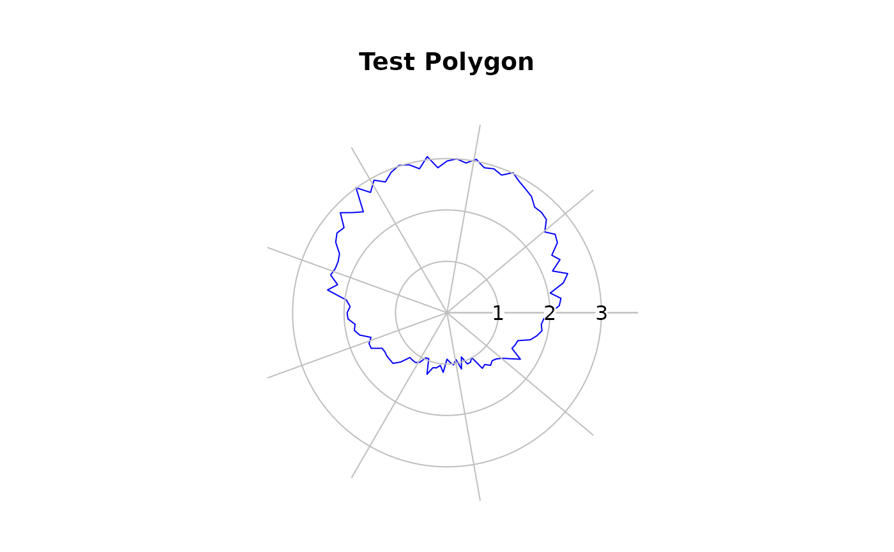
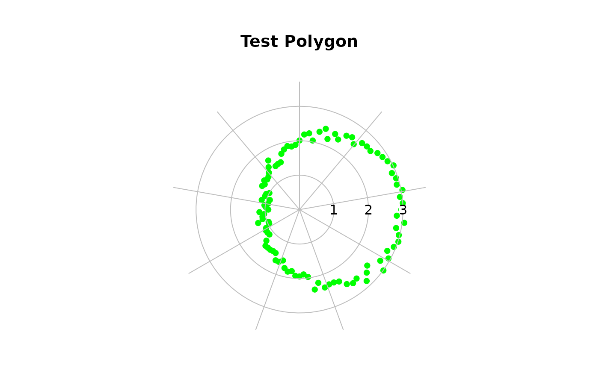
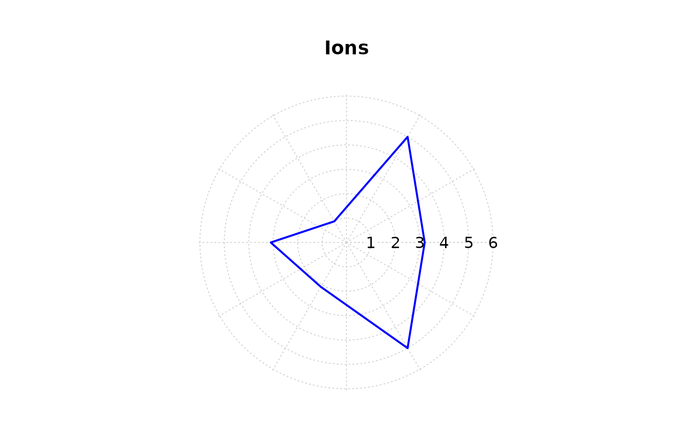
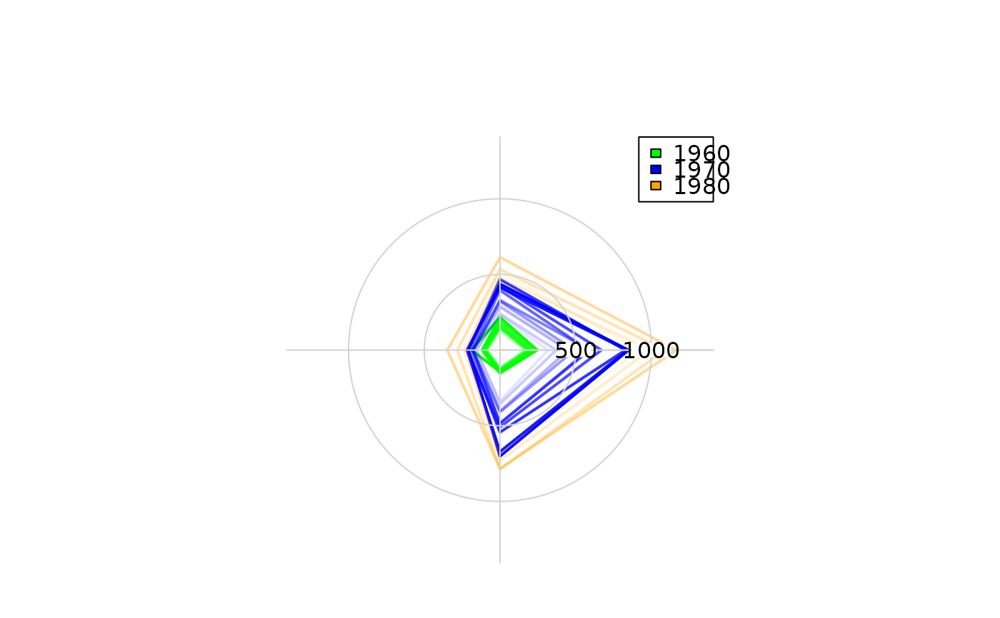
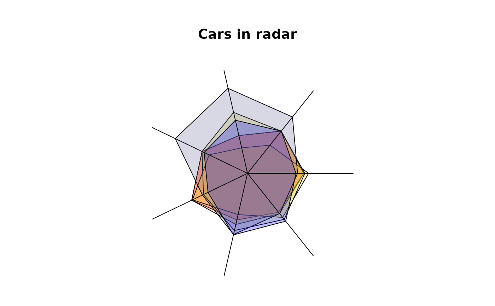
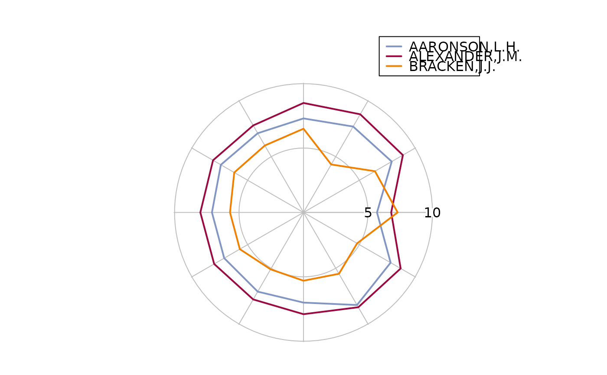

Plot Values on a Circular Grid
PlotPolar.RdPlotPolar creates a polar coordinate plot of the radius r in function of the angle theta.
0 degrees is drawn at the 3 o'clock position and angular values increase in a counterclockwise direction.
PlotPolar(r, theta = NULL, type = "p", rlim = NULL, main = "", lwd = par("lwd"), lty = par("lty"), col = par("col"), pch = par("pch"), fill = NA, cex = par("cex"), mar = c(2, 2, 5, 2), add = FALSE, ...)
Arguments
| r | a vector of radial data. |
|---|---|
| theta | a vector of angular data specified in radians. |
| type | one out of |
| rlim | the r limits (r1, r2) of the plot |
| main | a main title for the plot, see also |
| lwd | a vector of line widths, see |
| lty | a vector of line types, see |
| col | The colors for lines and points. Multiple colors can be specified so that each point can be given its own color. If there are fewer colors than points they are recycled in the standard fashion. Lines will all be plotted in the first colour specified. |
| pch | a vector of plotting characters or symbols: see |
| fill | fill color, defaults to |
| cex | a numerical vector giving the amount by which plotting characters and symbols should
be scaled relative to the default. This works as a multiple of |
| mar | A numerical vector of the form c(bottom, left, top, right) which gives the number of lines of margin to be specified on the four sides of the plot. |
| add | defines whether points should be added to an existing plot. |
| ... | further arguments are passed to the plot command. |
Details
The function is rather flexible and can produce quite a lot of of different plots. So is it also possible to create spider webs or radar plots.
Author
Andri Signorell <andri@signorell.net>
See also
Examples
testlen <- c(sin(seq(0, 1.98*pi, length=100))+2+rnorm(100)/10) testpos <- seq(0, 1.98*pi, length=100) PlotPolar(testlen, testpos, type="l", main="Test Polygon", col="blue")#> Error in .Call("between_num_r", as.numeric(x), as.numeric(rng[1L]), as.numeric(rng[2L]), PACKAGE = "DescTools"): "between_num_r" not available for .Call() for package "DescTools"# start at 12 o'clock and plot clockwise PlotPolar(testlen, -(testpos - pi/2), type="p", main="Test Polygon", col="green", pch=16)PolarGrid(ntheta = rev(seq(0, 2*pi, by=2*pi/9) + pi/2), alabels=Format(seq(0, 2*pi, by=2*pi/9), digits=2)[-10], col="grey", lty="solid", lblradians=TRUE)#> Error in .Call("between_num_r", as.numeric(x), as.numeric(rng[1L]), as.numeric(rng[2L]), PACKAGE = "DescTools"): "between_num_r" not available for .Call() for package "DescTools"# just because of it's beauty t <- seq(0,2*pi,0.01) PlotPolar( r=sin(2*t)*cos(2*t), theta=t, type="l", lty="dashed", col="red" )#> Error in .Call("between_num_r", as.numeric(x), as.numeric(rng[1L]), as.numeric(rng[2L]), PACKAGE = "DescTools"): "between_num_r" not available for .Call() for package "DescTools"# use some filled polygons ions <- c(3.2,5,1,3.1,2.1,5) ion.names <- c("Na","Ca","Mg","Cl","HCO3","SO4") PlotPolar(r = ions, type="l", fill="yellow")# the same, but let's have a grid first PlotPolar(r = ions, type="l", lwd=2, col="blue", main="Ions", panel.first=PolarGrid(nr=seq(0, 6, 1)) )#> Error in .Call("between_num_r", as.numeric(x), as.numeric(rng[1L]), as.numeric(rng[2L]), PACKAGE = "DescTools"): "between_num_r" not available for .Call() for package "DescTools"# leave the radial grid out PlotPolar(r = ions, type="l", fill="yellow")#> Error in .Call("between_num_r", as.numeric(x), as.numeric(rng[1L]), as.numeric(rng[2L]), PACKAGE = "DescTools"): "between_num_r" not available for .Call() for package "DescTools"# display radial lines PlotPolar(r = ions, type="h", col="blue", lwd=3)# add some points PlotPolar(r = ions, type="p", pch=16, add=TRUE, col="red", cex=1.5)# spiderweb (not really recommended...) posmat <- matrix(sample(2:9,30,TRUE),nrow=3) PlotPolar(posmat, type="l", main="Spiderweb plot", col=2:4, lwd=1:3)PolarGrid(nr=NA, ntheta=ncol(posmat), alabels=paste("X", 1:ncol(posmat), sep=""), col="grey", lty="solid" )#> Error in .Call("between_num_r", as.numeric(x), as.numeric(rng[1L]), as.numeric(rng[2L]), PACKAGE = "DescTools"): "between_num_r" not available for .Call() for package "DescTools"# example from: The grammar of graphics (L. Wilkinson) data("UKgas") m <- matrix(UKgas, ncol=4, byrow=TRUE) cols <- c(SetAlpha(rep("green", 10), seq(0,1,0.1)), SetAlpha(rep("blue", 10), seq(0,1,0.1)), SetAlpha(rep("orange", 10), seq(0,1,0.1)))#> Warning: longer argument not a multiple of length of shorter#> Warning: longer argument not a multiple of length of shorter#> Warning: longer argument not a multiple of length of shorterPlotPolar(r=m, type="l", col=cols, lwd=2 )#> Error in .Call("between_num_r", as.numeric(x), as.numeric(rng[1L]), as.numeric(rng[2L]), PACKAGE = "DescTools"): "between_num_r" not available for .Call() for package "DescTools"# radarplot (same here, consider alternatives...) data(mtcars) d.car <- scale(mtcars[1:6,1:7], center=FALSE) # let's have a palette with transparent colors (alpha = 32) cols <- SetAlpha(colorRampPalette(c("red","yellow","blue"), space = "rgb")(6), 0.25) PlotPolar(d.car, type="l", fill=cols, main="Cars in radar")#> Error in .Call("between_num_r", as.numeric(x), as.numeric(rng[1L]), as.numeric(rng[2L]), PACKAGE = "DescTools"): "between_num_r" not available for .Call() for package "DescTools"# a polar barplot x <- c(4,8,2,8,2,6,5,7,3,3,5,3) theta <- (0:12) * pi / 6 PlotPolar(x, type = "n", main="Some data")DrawCircle(x=0, y=0, r.in=0, r.out=x, theta.1 = theta[-length(theta)], theta.2 = theta[-1], col=SetAlpha(rainbow(12), 0.7), border=NA)# USJudgeRatings PlotPolar(USJudgeRatings[1,], type="l", col=hblue, lwd=2, cex=0.8, #fill=SetAlpha("blue", 0.4), panel.first=PolarGrid(ntheta=ncol(USJudgeRatings), col="grey", lty="solid", las=1, alabels=colnames(USJudgeRatings), lblradians=TRUE))#> Error in .Call("between_num_r", as.numeric(x), as.numeric(rng[1L]), as.numeric(rng[2L]), PACKAGE = "DescTools"): "between_num_r" not available for .Call() for package "DescTools"PlotPolar(USJudgeRatings[2,], type="l", col=hred, lwd=2, add=TRUE)PlotPolar(USJudgeRatings[5,], type="l", col=horange, lwd=2, add=TRUE)legend(x="topright", inset=-0.18, col = c(hblue,hred,horange), lwd=2, legend=rownames(USJudgeRatings)[c(1, 2, 5)])